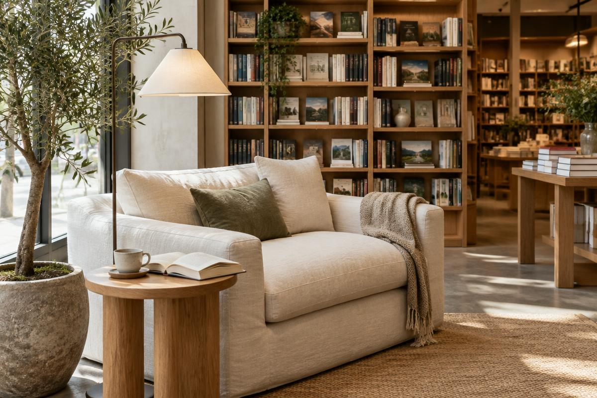

Literatura
Dlaczego czytamy wolniej — i dobrze
Hanna Wierzbicka ·

O przyjemności powolnej lektury w czasach nieskończonego przewijania.
Wolne czytanie nie jest modą ani manifestem. To raczej powrót do rytmu, w którym zdanie ma czas wybrzmieć, a bohater — dorosnąć w naszej głowie.
Książka jako miejsce
Wiele osób mówi nam, że przychodzi do MARGINESU nie po konkretny tytuł, ale po chwilę ciszy. Kanapa przy oknie, filiżanka i rozdział, który można przeczytać bez pośpiechu.
Trzy tytuły na początek
Jeśli chcesz spróbować, zacznij od krótkiej prozy. Opowiadania uczą uważności lepiej niż niejeden poradnik.